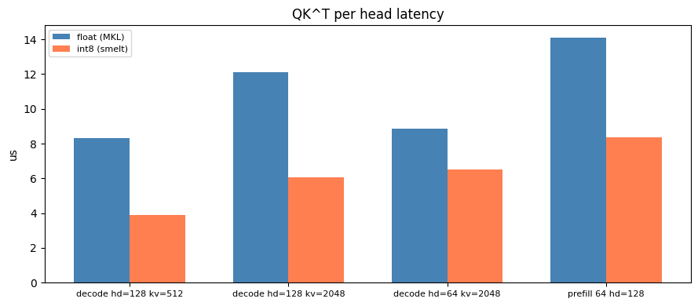

Numeric extremism
There is a clear split in what next-gen infrastructure should optimise for:
- LLM serving and inference providers want compression, quantisation, and tokens per second
- Science and engineering want precision, stability, high-order differentiability, and versatility
Ozaki scheme II recovers FP64 accuracy from INT8 and FP16 by decomposing floats, running the matmuls at lower precisions, and reconstructing with the Chinese Remainder Theorem. INT8 MACs are 16x smaller than FP64, so the same die area gives 16x the compute.
fp-emulation
github ↗
INT8 Ozaki: 1,239 cells. FP8+SR: 418. FP64: 20,071. PWL slope synthesis is
O(N) shift-add versus O(N²) multipliers.

Burgers equation. DT-PINN FP64 reaches the same loss as vanilla in 9.5s vs
43.1s. INT8 stays on the same trajectory.
tensor_inv
github ↗
Randomised SVD on cameraman. Reconstruction error drops from 0.13 at rank 5
to 0.07 at rank 50.
smelt
github ↗
QK⊤ per-head latency. smelt INT8 beats float MKL across decode and
prefill: 3.9us vs 8.3us at hd=128 kv=512, down through 8.4us vs 14.1us at
prefill 64 hd=128.